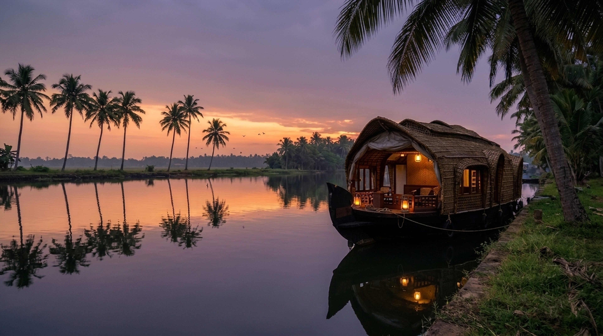
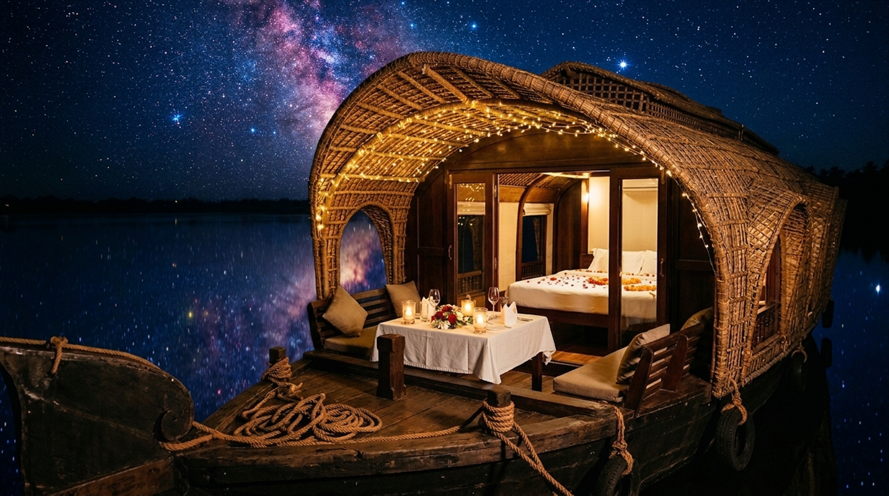
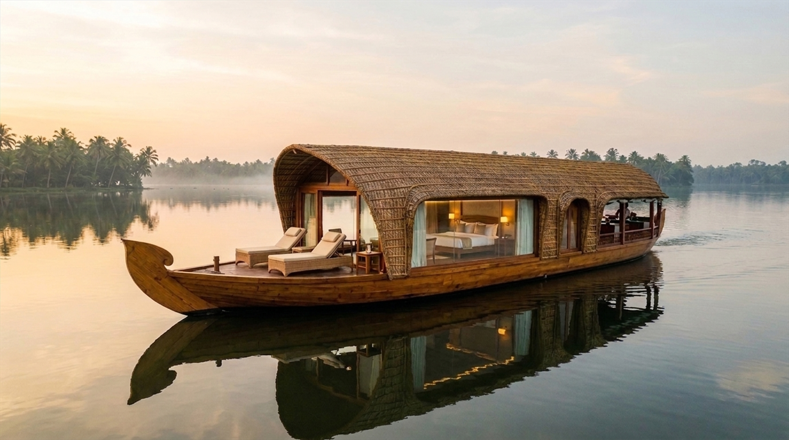
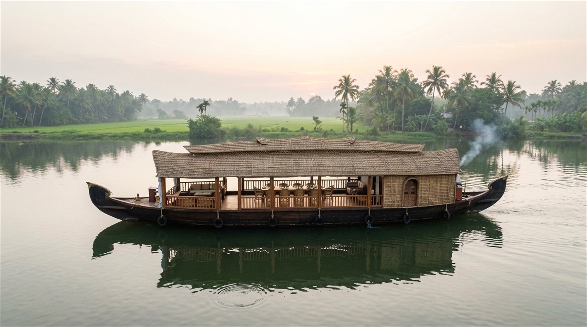

Exclusive Backwater Sanctuary · Alleppey & Kumarakom
Drift Slowly Through Kerala’s Backwaters.
Private kettuvallam cruises, freshly prepared local delicacies, and peaceful golden sunsets over still, reflective waters.
Private kettuvallam cruises, freshly prepared local delicacies, and peaceful golden sunsets over still, reflective waters.
Whether you have an afternoon to absorb the palm-fringed tranquility or wish to sleep to the rhythmic lap of Vembanad Lake.

Meander through silent village canals, feast on freshly caught pearl spot fish, and return by golden dusk.

Our signature journey: four freshly cooked meals, a starlit riverside anchorage, and misty morning tea on the bow.

Complete privacy on the water with candlelit deck dining, floral arrangements, celebratory cake, and stargazing.
We honor the heritage of Kerala boatbuilding while delivering the comfort, hygiene, and gastronomy of a boutique resort.
Equipped with state-approved bio-toilets, eco-friendly waste management, and solar silent energy to preserve the backwater ecosystem.
Every boat carries its own culinary master. Enjoy Karimeen Pollichathu, duck roast, and warm appams prepared fresh before your eyes.
Steered by Kerala Ports Department certified captains and engine drivers with over 15 years navigating every canal and tributary.
No strangers, no shared cabins. The entire vessel, sundeck, and crew are exclusively dedicated to you and your travel companions.
Whisper-quiet onboard generators ensure full-time air conditioning in glass suites, guaranteeing deep, undisturbed rest.
Traditional Anjili wild jackfruit timber stitched with natural coir ropes without a single iron nail—the authentic kettuvallam spirit.
Designed for couples, family reunions, and intimate gatherings. Choose your floating sanctuary.

Single-bedroom sanctuary for couples with front sundeck, glass suite, and private jacuzzi.
Double-decker luxury cruiser with upper viewing terrace, 2 master suites, and dedicated steward.

Three-bedroom family flagship with wide dining hall, child-safe railings, and live interactive galley.
From noon boarding to morning mist, experience how time gently unspools on an overnight kettuvallam cruise.
Step onto the teak deck at Punnamada Jetty. Enjoy fresh chilled tender coconut water, aromatic cold towels, and a warm briefing from your captain.
The boat drops anchor in a calm bay as your private chef presents freshly prepared Pearl Spot fish in banana leaf, Kerala red rice, aviyal, and coconut thoran.
Glide past Kuttanad's famed farming below sea level. Watch kingfishers dive, village women weaving coir ropes, and school children commuting in canoes.
As the tropical sun paints the sky in shades of gold and lotus pink, enjoy steaming cardamom chai paired with hot, crisp banana fritters on the front deck.
Moored by a secluded bank under a canopy of stars. Dine on tiger prawn roast or roasted vegetable curry while the water softly laps against the hull.
Wake to egrets fishing in the mist. Enjoy fresh South Indian filter coffee and piping hot appams with vegetable stew as we sail back to the harbor.
Explore the rich network of lakes, canals, and estuaries that make Kerala the Venice of the East.

The heart of Kerala backwater cruising. Home to the historic Punnamada Lake, Nehru Trophy boat race routes, and intricate canals.

Wide open lake vistas, tranquil luxury resorts, migratory Siberian storks, and mangrove islands fringing the water.

The rice bowl of Kerala, where farming is uniquely practiced below sea level. Slender canals, wooden bridges, and duck farms.
No pre-cooked buffets. Every meal is created fresh inside your houseboat’s galley kitchen as the water glides past your table.
From wild pearl spot caught by morning fishermen to tender duck roast braised in coconut milk and freshly ground black pepper, our culinary heritage connects you deeply to the land. Pure vegetarian and Jain banquets are prepared in sanitized separate cookware upon request.
Over 4,800 guests have trusted Ketturam for romantic honeymoons, anniversaries, and unhurried family vacations.
Glimpses from daily voyages across Alleppey and Kumarakom. Click any moment to open in full screen.
Everything you need to know before stepping aboard our Kerala kettuvallams.